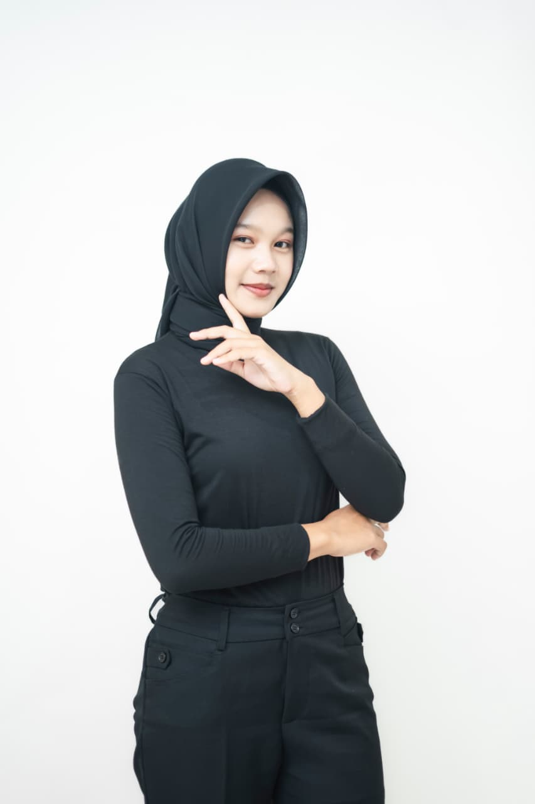

────୨ৎ────PORTOFOLIO────୨ৎ──── |
||||||||||||||||||||||||||||
|
Profil Cita-cita Pandangan hidup link media sosial Pendidikan |
||||||||||||||||||||||||||||
𓍯𓂃𓏧♡Welcome𓍯𓂃𓏧♡𓍢ִ໋❀˚⋆Profil Saya
| ||||||||||||||||||||||||||||
❀࿐Cita-citaCita-cita saya adalah menjadi orang yang sukses dan bisa membanggakan kedua orang tua saya. Saya ingin mewujudkan keinginan-keinginan mereka, membalas segala perjuangan dan pengorbanan mereka, meskipun saya tahu semua itu tidak akan pernah sebanding dengan apa yang telah mereka berikan kepada saya. Saya ingin suatu hari nanti bisa membuat mereka bahagia, melihat mereka tersenyum bangga, dan berkata bahwa mereka berhasil mendidik saya hingga menjadi seseorang yang bisa mereka banggakan. Selain itu, saya juga ingin menjadi orang yang berguna bagi banyak orang, karena bagi saya, kesuksesan yang sesungguhnya bukan hanya tentang seberapa jauh saya bisa melangkah, tetapi juga tentang seberapa banyak kebaikan yang bisa saya berikan kepada orang lain | ||||||||||||||||||||||||||||
⋆˚✿˖°Pandangan HidupPandangan hidup saya sederhana, saya hanya ingin menjalani hidup dengan baik dan berusaha semampu saya untuk meraih apa yang saya inginkan. Saya sadar bahwa hidup tidak selalu berjalan sesuai harapan, ada kalanya saya merasa lelah, takut, bahkan ragu dengan kemampuan diri sendiri. Namun, saya ingin tetap belajar untuk menghadapi semuanya dan tidak mudah menyerah. Bagi saya, hidup bukan tentang siapa yang paling cepat berhasil, tetapi tentang bagaimana kita tetap berusaha meskipun jalannya tidak selalu mudah. Saya juga ingin selalu mengingat ada kedua orang tua yang berharap saya bisa menjadi seseorang yang berhasil. Saya ingin suatu hari nanti bisa melihat mereka bahagia karena saya, bisa membantu mereka tanpa harus banyak berpikir, dan membuktikan bahwa segala usaha yang saya lakukan selama ini tidak sia-sia. Saya tidak harus menjadi orang yang hebat di mata semua orang, saya hanya ingin menjadi orang yang baik, bisa membanggakan kedua orang tua, dan kehadiran saya bisa memberikan manfaat bagi orang lain. | ||||||||||||||||||||||||||||
˚˖𓍢ִ໋❀link media sosial |
||||||||||||||||||||||||||||
.⋆❀°Pendidikan
| ||||||||||||||||||||||||||||